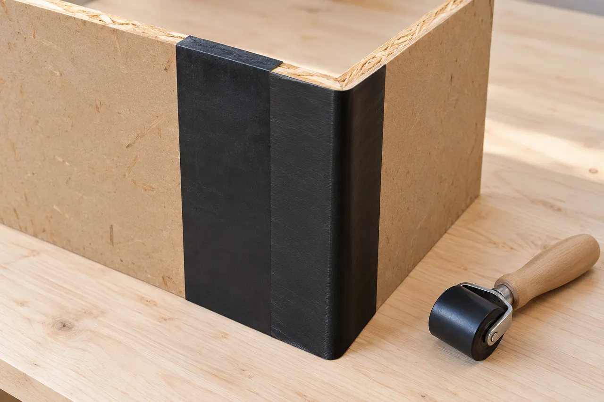

Concealed conditions need an agreed process
Existing finishes can hide issues that become visible only during work. Define documentation, pricing and authorization steps for those discoveries before demolition begins.
Keller, Texas
A general contractor in Keller for remodeling, repairs and coordinated construction. Start with a room-by-room scope, priorities and material selections. Compare estimates by included work, allowances, trade responsibilities and the process for changes during construction.
5.0 Google Rating · Based on 39 reviews · Checked Nov. 10, 2026
View Our Google Profile →Professional, reliable and detail-oriented from planning through completion. The craftsmanship and finished work exceeded expectations.
Read review summary · Source: Google →Top-notch communication, professionalism and attention to detail on a Jack-and-Jill bathroom renovation.
Read review summary · Source: Google →“Fair price for great work. Definitely recommend them for general repairs and maintenance.”
View public recommendation →Read customer feedback with the original source identified for every review.
View All Customer Reviews →General contracting / Keller, Texas
Planning general contracting in Keller? Concealed conditions need an agreed process. Use the guidance below to review the proposed work and the conditions at your property.
Existing finishes can hide issues that become visible only during work. Define documentation, pricing and authorization steps for those discoveries before demolition begins.
If comparing proposals, put both on the same basis: measurements, preparation, exact product, accessories, finish limits and cleanup. A lower material price does not explain whether the complete installation responsibilities are equivalent.
Project planning
A measured plan records the dimensions, selected finishes, work boundaries and trade responsibilities used for the estimate.
Selection check
Resolve structural, mechanical and permit questions before locking the construction sequence. Include an agreed process for concealed conditions and changes.
Keep manufacturer documents with the final selections and obtain the installation obligations in the written agreement.
Simpson Strong-Tie
Connectors transfer forces between specified framing members when installed with the correct compatible fasteners.
Selection check
Selection depends on the loads, wood treatment, exposure and connection geometry. Decorative appearance does not establish structural capacity.
Product documentation governs the selected connector. A hardware warranty does not replace structural design or cover an unspecified assembly.

Huber ZIP System
Sheathing, compatible tape and flashing can form a specified water- and air-management assembly.
Selection check
Plan panel joints, openings, penetrations and connections to the roof and foundation. Do not mix components without written approval for that assembly.
ZIP System publishes a 30-year limited warranty for qualifying residential assemblies; commercial requirements differ.
Existing finishes can hide issues that become visible only during work. Bring photographs, dimensions and any relevant previous repair records to the discussion.
Compare measured drawings and scope decisions, structural connectors and fasteners, integrated sheathing and seam treatment. Specify the selected components and the preparation they require.
Use written approval for changed scope. A lower material price does not explain whether the complete installation responsibilities are equivalent.
Align quantities, preparation, selected product and installation boundaries, then identify exclusions and owner-supplied items. Ask for differences to be explained in writing before deciding which proposal meets the intended result.
Use written approval for changed scope. The written scope should also identify the selected products, work boundaries, required trade coordination and approval steps for changes.
No. These are references for comparing product categories. Availability, suitability, the exact model and the actual supplier must be confirmed for the property. A reference does not imply certification, stock or a brand affiliation.
Manufacturer coverage: Terms apply to the exact product and eligible application. Material coverage, complete-system programs and installation workmanship are different obligations. Request the current written warranty and care instructions; a warranty term is not a guaranteed service life. Generic illustrations are original explanatory artwork, not branded packaging.
Discuss the conditions at your property.
Include the project address, relevant photos and your priorities.
Scheduling, access, protection, materials, trade coordination, cleanup and any hidden conditions are reviewed before work begins.
A general contractor organizes the approved scope, scheduling, materials, trade work, site communication and quality control.
Yes. Project fit depends on the scope, location and scheduling, and we review those details during the estimate process.
Yes. Luna General Contractors serves homes and businesses throughout Keller and nearby communities.
Start Your Project
Tell us about your property and the work you have in mind. We can discuss the scope, access, material selections and next steps.